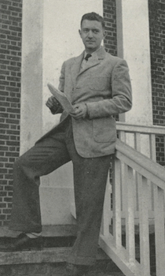

About
The Shenandoah Index is a part of Literary Networks, a Digital Humanities project at Washington and Lee University. For more information about this project, contact Jeff Barry (barryj@wlu.edu, twitter:@jeffbarry), Associate Professor and Associate University Librarian, Washington and Lee University.
Ezra Pound exerted a monumental influence on the development of modernism through small literary journals, "little magazines", that existed to promote appreciation of literature and the arts. Pound was the consummate networker, a skill he used to advance the careers of others more than his own. Scholarship on Pound as a literary impresario focuses on his involvement with early 20th century publications such as The English Review, The Little Review, Poetry and others. Likewise, Pound's influence on the careers of James Joyce, T.S. Eliot, and William Butler Yeats are well documented. The incredible extent of Pound's literary network has never been fully mapped. Likewise, all fiction and poetry produced today is sustained through a connection of writers, editors, and publishing outlets.
A framework for this initiative is the evolving nature of literary journals, especially the type known as "little magazines" that function as the places where most poetry and short stories are first published. Our starting point in this project is Shenandoah, a literary journal published since 1950 by Washington and Lee University (W&L).
Only recently has the Pound connection to W&L been rediscovered through letters between Pound and Tom Carter, the editor of volumes 2 through 4 of Shenandoah. At that time, 1951-1953, the journal was a student-run publication and Carter started his role of editor at age 19. (The previous editor was Tom Wolfe, W&L class of '51.) The Carter/Pound correspondence continued for more than a decade. The letters document that Pound continued his mentoring of emerging writers and literary publications throughout the 1950s while confined to the mental hospital. The letters from Pound reveal lucid thoughts but with the same erratic punctuation and phrasing that his correspondence always has shown. Throughout the letters Pound, in his colorful manner, advises the young editor and aspiring writer to seek out his contemporaries in an ongoing dialogue about literature and publishing.
Tom Carter and Ezra Pound had planned to start their own journal after Carter left Shenandoah (due to graduating and having to hand the editorship over to another student). Lack of funding and Carter's ongoing health problems prevented the Carter/Pound publishing endeavor. Pound's letters to Carter have been called an instruction manual on starting a literary journal. If the two men lived today their collaboration undoubtedly would have launched an online journal. Literary journals, particularly those of the online variety, are started no longer by universities but by individuals passionate about literarture. The contemporary Little Magazines continues as the dominant sources of new writings. The Council of Literary Magazines and Publishers, which promotes independent literary publishing, has a membership today of nearly 500 literary magazines and presses. Literary publishing is not merely literary history but a vibrant and struggling part of our global culture.
As a liberal arts college W&L is especially interested in the ways that DH methodologies and faculty research agendas integrate with undergraduate teaching and student learning outcomes.
The Thomas H. Carter ('54) collection and archival manuscripts in the Shenandoah collection serve as a springboard for establishing an undergraduate Digital Humanities pedagogy in literary studies that can be applied to many literary domains, particularly marginalized areas, as well as extending to other areas of the humanities.
A DH-based research agenda on the networks within literary publishing will unveil lessons about the evolution of little magazines that impact the current generation of literary outlets that bring new voices to the public.
The code used in this project, including the metadata used in the database, can be found at our github repository.
Thomas H. Carter
(October 3, 1931 - November 21, 1963)

Thomas Henry Carter, known to family and friends as Tom or Tommy, was born in Martinsville, Virginia. His interests in publishing emerged while still a student at Martinsville High School where he edited a small magazine titled Spearhead. Unlike most high school magazines, Spearhead published major authors such as Ray Bradbury, e.e. cummings, and William Carlos Williams. These authors, among others, were attracted to this small publication through letters from the teenage Tom Carter. That talent and lack of shyness in appealing to literary figures to contribute to a new publication formed a dominant aspect of Carter's life. As a sophomore in college at Washington and Lee, Carter was granted the role of editor of the Shenandoah literary journal, which had just started the prior year.
Carter propelled Shenandoah into the top ranks of literary journals, which is even more amazing that he did so as a college student. But good publications are not produced single-handedly or in a vacuum. The literary network that Carter established directly led to the essays, poetry, and stories published in Shenandoah during his time as editor. A detailed article titled "Ezra Pound, Thomas Carter, and the Making of An American Literary Magazine" describes the period of Carter's editorship of Shenandoah.1 Carter somehow managed to edit the journal while also earning excellent grades. He was a member of Phi Beta Kappa, Omicron Delta Kappa, and graduated in 1954 magna cum laude. He continued his studies of literature at Vanderbilt University where he earned an M.A. in English in 1956. His master's thesis was on the poetry of William Carlos Williams. After a fellowship with the Kenyon Review, Carter continued graduate study for a doctoral degree at Duke University.
Carter never completed his Ph.D. from Duke. At this point certain mysteries of his life remain unknown. He returned to his home town of Martinsville, Virginia to teach high school and at the Patrick Henry Branch of the University Virginia. (The branch is now the Patrick Henry Community College.) Yet, his correspondence with the broad world of literature didn't cease. In the early 1960s he organized a literary seminar for students at the high school featuring visits from established authors.
Another unknown factor is the nature of the illnesses that plagued Carter during his life. His letters often describe migraines and intense pain. Tom Carter died on November 21, 1963 (the day before the Kennedy assasination).
In addition to striving for a career as a literary critic and editor, Carter pursued writing his own fiction and poetry. During the last year of his life he worked on revising one of his own short stories about a family struggling through a funeral. Capitalizing on his literary network he sought advice for the story from Andrew Lytle (editor of the Sewanee Review) and Robie Macauley (editor of the Kenyon Review), both of whom he had known for several years. In a letter from Lytle suggesting revisions and the need to keep working out the story, Lytle advises the younger writer, "There's no way to avoid going down and wrestling with the angel".2 Nine days before Carter died he received another letter from Lytle with advice for further revisions.
An extensive biography of Carter and his writings is planned as a phase of this project.
- Kappel, Andrew J. "Ezra Pound, Thomas Carter, and the Making of an American Literary Magazine." Shenandoah: The Washington & Lee University Review 31.3 (1980): 3-22.
- Lytle, Andrew. Tom Carter. February 26, 1963. TS. Thomas H. Carter Collection. Vanderbilt Univesity, Nashville.